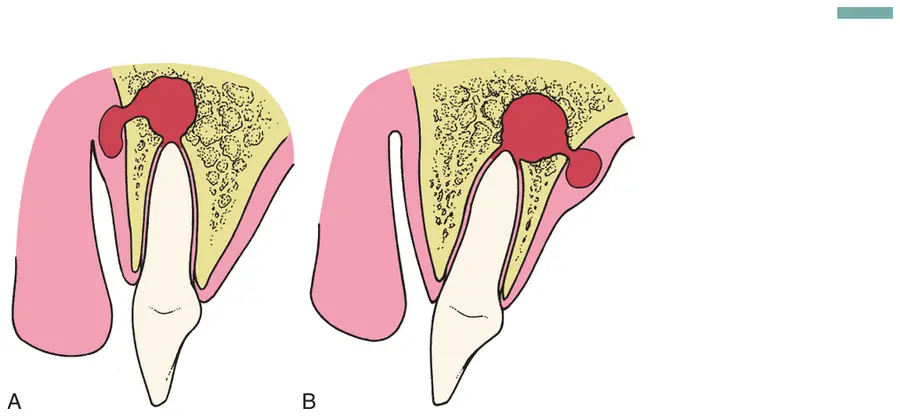

نسخه استخراجشده؛ ترجمه یا تأیید علمی انجام نشده است. وضعیت: captured
یک جمله کل این درس را میسازد: در نهایت این دفاع میزبان بیمار است که پس از مدیریت جراحی، با عفونت مبارزه میکند.

یعنی بخش حیاتی ترمیم پس از یک عفونت اودنتوژنیک، حضور یک سیستم دفاعی میزبان سالم است. جراحی و آنتیبیوتیک، شرایط را فراهم میکنند؛ ولی کارِ اصلی را بدن بیمار انجام میدهد.
و این نکته را دستکم نگیر: اهمیت ارزیابی دقیق دفاع میزبان بیمار، و بهینه کردن آن، نمیتواند بیش از حد تأکید شود. و این، اهمیت گرفتن شرححال کامل هنگام مراجعهی بیمار را برجسته میکند.
و قاعدهی عملی که از این نتیجه میشود: وقتی سازوکار دفاعی میزبان مختل است، باید با مدیریت تهاجمی عفونت جبران شود — یعنی درمان جراحی و، در بیشتر موارد، درمان آنتیبیوتیکی کمکی.
پس بیمار با نقص ایمنی، همان درمانی را نمیگیرد که بیمار سالم. نه چون عفونتش متفاوت است، بلکه چون کمکی که از بدن خودش میآید کمتر است.
بیماریهای همراهی که به سیستم دفاعی میزبان آسیب میزنند، به دو دستهی اصلی تقسیم میشوند:
و مهمترین مثال دستهی اول: دیابت شیرین با کنترل ضعیف، که بهشدت با اختلال ترمیم مرتبط است.
و مکانیسمش دقیقاً این است: هایپرگلایسمی سبب کاهش کموتاکسی و فاگوسیتوز لکوسیتها میشود، و توانایی فرد در مقاومت و مبارزه با عفونت را بهشدت مختل میکند.
و نمونههای دستهی دوم: سرطانهای خونی مانند لوسمی و لنفوم، شیمیدرمانی، داروهای سرکوبگر ایمنی و کورتیکواستروئیدها، و عفونت HIV شدید.
و یک قاعدهی عملی برای موارد شدید: بیماران با عفونتهای شدید، بهویژه در محیط بیمارستانی، نیازمند کنترل دقیق قند خوناند.
و همینجا حلقه به درس قبلی وصل میشود: اگر در مرور سیستمها پُرادراری و پُرنوشی و پُرخوری را نپرسیده باشی، ممکن است دیابت تشخیصدادهنشدهی بیمار را ندیده بگیری — و بعد تعجب کنی که چرا عفونتش پاسخ نمیدهد.